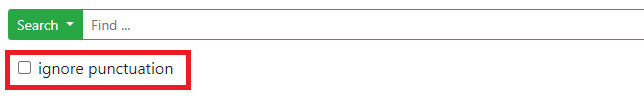
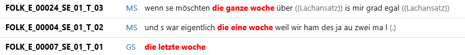
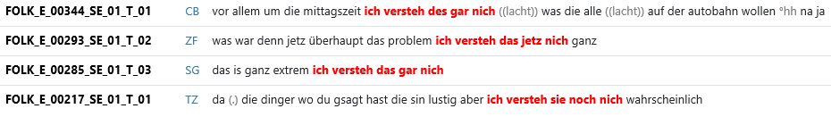
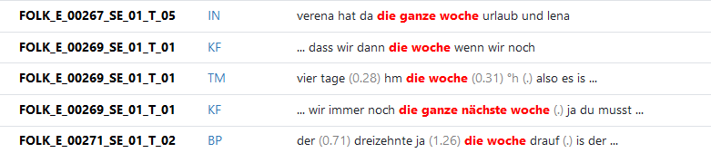
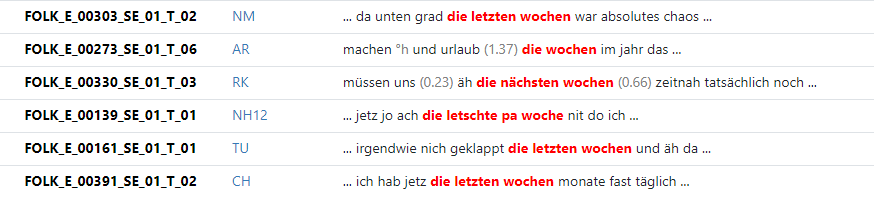
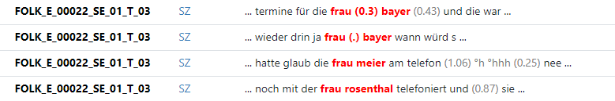
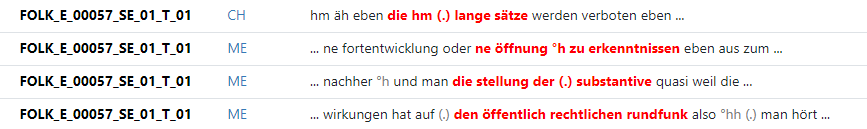
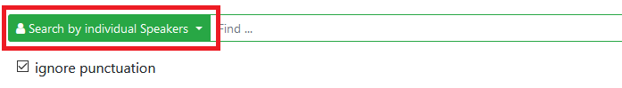

The search engine of ZuRecht is built on MTAS (Multi-Tier Annotation Search) - an open source Lucene-based search engine framework developed for querying on text with multilevel annotations. As part of the ZuMult project, the MTAS and its query language were adapted for querying audio transcripts from the Archive of Spoken German (AGD) at the Leibniz-Institute for the German Language (IDS).
Currently, seven corpora from the AGD can be queried using the MTAS Corpus Query Language (MTAS CQL) - a modified version of CQP Query Language (CQP QL) introduced by the IMS Open Corpus Workbench (CWB)
Content
Matching transcribed forms
Accessing token-level annotations
Case-insensitive search
Regular Expressions
Multi-token annotation values
Matching undefined tokens
Pauses
Combining constraints on single tokens
Negation
Searching by position number
Token distance
Optional tokens
Token precedence
Positional constraints
Constraining token sequences to one speaker/speaker contribution
Speech rate annotations
Selective sequence and action annotations (FOLK)
Discourse comments (GWSS)
Citations (GWSS)
Code-switching (GWSS)
Prompt reference annotations (MEND)
6 Constraining Queries with Metadata
Specifying metadata keys
Specifying metadata values
Negation
Combining metadata categories
Simple search
Clitics
Collocations
Repetitions
N-grams
Speaker changes
Differences between transcribed and normalized forms
Number of tokens
Search with wordlists
1 Tokens and Token-level Annotations
The MTAS CQL uses a special pattern to match a single position token. This is a key-value pair placed in square brackets:
[key="value"]
While the key is associated with one of the annotation levels (e.g. pos or lemma), the value is a specification of a token itself or one of its annotation tags.
The specified value is always interpreted as a regular expression and should be enclosed in double quotes.
If the value should not be treated as a regular expression, but just as a normal string, the "==" operator can be used.
For the search in transcriptions the attribute word is reserved and can be used as demonstrated in the following query looking for all occurrences of the word token wann:
To search for other transcribed speech and non-speech events, the attributes vocal and incident are available, so the queries below will find all vocalized phenomena annotated with 'short breathe in' (°h) and all events annotated with 'Lachansatz' (laughter), respectively.
If corpora contain punctuation marks, the attribute pc can be used to search for them.
Please make sure to uncheck the box 'ignore punctuation' below the query input field when searching for punctuation characters

and to use backslash (\) before quotation marks (") and special characters from Regular Expressions like (.) or (?).
The lemma, pos, norm, phon and word.type attributes may be used in a query for matching token-level annotations.
The attribute norm specifies the normalized form of the transcribed token. For example, 'kannst' is the normalized form of kannst, kannscht, kannschst etc. and 'Tag' is the normalized form of tag, tach and dag, so the queries below will find all these forms.
Personal pronouns (PPER) can be normalized with both uppercase and lowercase letters, e.g. 'Euch' or 'euch', 'Du' or 'du'.
Please use case-insensitive queries to search for normalized forms of personal pronouns.
Examples:
[norm_lc="euch"]
[norm_lc="du"]
The attribute lemma is used to retrieve all the inflectional variants of a given word. This is exemplified by the next query that finds all inflectional forms of the verb 'können', incl. their different transcriptions (e.g. kann, kannst, kannschst, können, könntest, konnte, gekonnt etc.)
Articles (der, die, das etc.) are lemmatized as 'd'. To search for all of them, please use the following query: [lemma="d"].
The attribute pos stands for 'part of speech' and matches all occurrences of words annotated with a specified tag. For example, to find all proper names in transcripts the following query can be used:
All corpora in the AGD archive are anonymized for reasons of data protection. More information you will find here.
To search in phonological transcriptions the attribute phon may be used. Here are some examples:
The attribute word.type is reserved for corpus-specific token-based annotations. For example, in FOLK, all transcribed words from an uncertainly understood passage were commented on as "unclear". To search for these words, the following query can be used:
Other possible values of the word.type-attribute are e.g. "ol-in" used to annotate all tokens within speaker overlaps and "diffNorm" for marking tokens that had to be normalized, e.g. net (normalized form: 'nicht'), tach (normalized form: 'Tag') or weeß (normalized form: 'weiß'):
In some corpora, the attribute word.type can have multiple values combined in one string, so-called multi-token annotation values (e.g. @type="uncertain assimilated ol-in"). Please consider the difference between the following queries:
[word.type="ol-in"] matches tokens annotated with the tag "ol-in"
[word.type=".*ol-in.*"] matches tokens annotated with tags containing "ol-in" like "ol-in", "ol-in assimilated", "assimilated uncertain ol-in" etc.
Information about the tagsets that were used to annotate individual corpora can be found on the page of the corresponding corpus within DGD.
Case-insensitive search is useful when searching in corpora created according to different transcription and annotation conventions. In ZuRecht is it possible to search case-insensitively for transcribed word token, their lemmata and normalized forms. Just add '_lc' to the appropriate attribute and specify the value in lower case as demonstrated by the next queries.
Regular expressions help search data by partial matching. The following operations and special characters may be used when specifying a token or one of its annotation tags:
| Meaning | Example query | Example match | |
|---|---|---|---|
| ? (question mark) | indicates zero or one occurrences of the preceding element | [norm="Tage?"] | matches word tokens normalized with "Tag" or "Tage" |
| [norm="Bär(en)?"] | matches word tokens normalized with "Bär" or "Bären" | ||
| * (asterisk) | indicates zero or more occurrences of the preceding element | [lemma="Party.*"] | matches word tokens annotated with lemma "Party" or "Partymaus", "Partyservice", "Partylaune" etc. |
| + (plus sign) | indicates one or more occurrences of the preceding element | [lemma=".+party"] | matches compounds with lemma ending with "party" like "Grillparty", "Modeparty" etc. |
| . (wildcard) | matches any character | [pos="ADJ."] | matches word tokens annotated with 'ADJA' or 'ADJD', e.g. gut, schön, klar etc. |
| {n} | the preceding element should be matched exactly n times | [word="zim{3}er"] | matches 'Zimmer' transcribed with three m |
| {n,} | the preceding element should be matched n or more times | [word="ah{2,}"] | matches ahh, ahhh, ahhhh etc. |
| {n,m} | the preceding element should be matched at least n, but not more than m times | [word="m{1,3}h{0,2}"] | matches m,mh,mmh,mm,mhh,mmm etc. |
| | (vertical bar) | specifies alternatives (boolean 'or') | [word="(W|w)enn"] | matches transcribed forms Wenn and wenn |
| ( ) | grouping characters | [word="(mh){2}"] | matches mhmh |
| [abc] | alternative characters | [norm="[HVN]ase"] | matches word tokens normalized with "Hase", "Vase" or "Nase" |
| [^ ] | non-matching character list | [word=".+[^s]ch"] | matches word tokens ending with 'ch', but not 'sch' (e.g. auch, natürlich, wirklich, but NOT falsch) |
| [norm="[^MH]aus"] | matches normalized forms that consist of four characters and end with "aus", but not "Maus" and "Haus" |
More examples with regular expressions:
The following three queries are equivalent. All of them match word tokens 'mir' and 'dir'.
If combined with the '=' operator, the value is always interpreted as a regular expression. If the specification of a token value should contain special characters (e.g. '.' or '?'), they have to be escaped with a backslash (\), as demonstrated by the following query looking for two syllable word tokens (=word tokens containing one dot in the phonetic annotations).
Some more examples for searching polysyllabic words by using regular expressions:
Sometimes annotation tags of single word tokens can have multi-token values. That concerns primarily norm-, lemma- and pos-annotations as demonstrated in the table below for three transcribed forms: haste, mim and hamma.
| haste | mim | hamma | |
|---|---|---|---|
| norm | hast Du | mit dem | haben wir |
| lemma | haben du | mit d | haben wir |
| pos | VAFIN PPER | APPR ART | VAFIN PPER |
The difference between the two queries below is that the first query matches all inflected and transcribed forms of the verb 'haben', including such forms as haste and haschte (lemma: haben du), while the second query will ignore both forms haste and haschte and match only forms annotated with lemma 'haben', but not 'haben du':
When using the attribute word.type, its ability to have multiple values combined in one string (e.g. @type="uncertain assimilated ol-in") also should be taken into account. Please use '.*' before and after the value string to be sure to match, for example, all word tokens marked as "assimilated" like ans in 'ans Herz gewachsen' or s in 'wo geht_s hin'.
[ ] may be used to match any token, including word tokens, pauses, vocalized phenomena and transcribed non-speech events.
To match only undefined word tokens, one of the following queries can be used:
The same applies to <pause>, <vocal>, <incident> and <pc> elements.
The following search patterns are equivalent:
[attribute=".*"]
<attribute/>
To find out how to search for specific events, vocal phenomena, pauses, and punctuation marks, see 'Matching transcribed forms' and 'Pauses'.
To search for all non-word tokens (pauses, incidents, vocals etc.) the para attribute may be used:
The following query may be used to match all annotated pauses.
It is also possible to search for pauses of special type (micro, short, medium or long)
Next queries may be used for searching pauses by their duration.
The values of the pause.dur attribute are strings and should be enclosed in double quotes.
To enable the search for pauses by using comparison operators, the string value of pause duration was rounded upward to its nearest integer and indexed as value of the pause.dur.ceil attribute. Next queries demontrate the benefits of this method:
The pause.dur.ceil attribute contains only whole numbers, no decimals.
The following queries are therefore not possible in the actual version of ZuRecht:
[pause.dur.ceil>5.3]
[pause.dur.ceil<5.3]
[pause.dur.ceil<=5.3]
Please consider the difference between the following queries:
[pause.dur="6.0"] matches pauses equal to 6 seconds (= equals to the string 6.0)
[pause.dur.ceil=6] matches pauses longer than 5 and shorter or equal to 6 seconds (because pauses with the duration of more than 5 sec., e.g. 5.3 sec., are rounded to 6)
[pause.dur.ceil<6] matches pauses equal to or shorter than 5 seconds (because pauses with the duration of more than 5 sec., e.g. 5.3 sec., are rounded to 6)
[pause.dur.ceil<=6] matches pauses equal to or shorter than 6 seconds (pauses longer than 5 and shorter than 6 sec., e.g. 5.3 sec., are rounded to 6)
Operators '|' (or) and '&' (and) may be used to combine different constraints on single position tokens. Some examples:
The next two queries are equivalent. They match all transcribed forms of 'Herr' and 'Frau'.
In the queries below you can see the use of the negation operator '!' (not). It should come before the attribute for which the value is being specified:
Please consider the difference between the following queries:
[!lemma="äh"] matches all tokens without lemma (incl. pauses) and word tokens those lemma is not equal to äh
[word=".*" & !lemma="äh"] matches all word tokens without lemma and word tokens those lemma is not equal to äh
[lemma=".*" & !lemma="äh"] matches all tokens annotated with lemma, but not equal to äh
The CQP-operator '!=' (must not match regular expression) is not supported in MTAS and ZuRecht.
The negation operator can also be combined with other logical operators:
Please consider the difference between ! and [^ ]: ! is a negation operator coming from MTAS Query Language.
[^ ] is a metacharacter of regular expressions. It matches a single character that is not contained within the brackets.
By using operator '#', it is possible to search for certain positions in transcripts. Next queries demonstrate the use of the '#'-operator.
Not all transcripts start with a word token. In most transcripts of the AGD corpora, the first word token occurs at the second, third or later position. These transcripts usually start with an annotated speech or non-speech event (<vocal>, <incident>) as well as an annotated pause (<pause>) or a sequence of these elements.
Sometimes, one <speaker-silence>-element is placed at the first position in order to synchronize transcriptions with time-based span annotations. This is the case when span annotations start earlier in the timeline than the transcription itself. In this case [#0] will not return any results in the KWIC-search for the appropriate transcript. This is e.g. the case in BETV corpus. Please use here one of the following queries to search for the first transcribed token in each transcript.
2 Token Sequences
To search for phrases like "im Laufe des Tages" please put each token inside its own pair of square brackets as demonstrated by the following query:
Empty square brackets, matching any token, may be used to specify the token distance between two tokens or token sequences, e.g.
This query will find die followed by woche with one token (e.g. word token, pause or non-speech event) in between:
To look for two tokens or token sequences separated by N other tokens, there are two possibilities available: either to use N pairs of empty square brackets or to specify the number of tokens (which may occur in between) enclosed in curly brackets {N}. The following two queries are equivalent:
The result of these queries will contain the token sequence 'ich verstehe' followed by all forms of 'nicht' with two tokens in between:
[ ] matches any token. To specify the token distance by the number of WORD tokens, please use <word/>.
Example:
[norm="ich"][norm="verstehe"]<word/>{2}[lemma="nicht"]
will find the token sequence 'ich verstehe' followed by all forms of 'nicht' with two word tokens in between.
To specify the minimum and maximum of token distance, regular expression {n,m} may be used:
There are two ways to specify the optionality of a token: either by using a question mark ? or by using {0,1} after the optional token. The both queries below look for "vielen Dank" with one optional form of lemma 'äh' in between.
Some more examples of complex queries using the optionality operators:
Example 1:
This query will find 'die' followed by 'woche' with either no further element or one or two adjectives in between:
Example 2:
This query will find die followed by a token normalized as 'Wochen' with one optional adjective or one optional sequence of 'adjective + ordinal' or 'adjective + attributive indefinite pronoun with determiner' in between:
Example 3:
This query find 'herr' or 'frau' followed by a proper name, with one filler transcribed as 'äh', a pause of any length or another non-lexical or non-vocal phenomenon optionally occurring in between:
Example 4:
This query will match an article followed by a noun with two word tokens in between (pauses and/or other non-speech events may also occur in between):
When looking for phrases containing optional token sequences, the whole token sequence should be put in round brackets followed by {0,1} or a question mark.
The precedence-operators followedby, !followedby, precededby and !precededby allow the closer environment of a token or a token sequence to be specified. Examples:
Please consider the difference between the following queries:
[word="verstehe"][word="nicht"] matches and highlights verstehe nicht
[word="verstehe"] followedby [word="nicht"] matches and highlights verstehe if it is followed by nicht
3 Structures
Structures refer to speaker contributions represented by xml-elements <annotationBlock>, in which the spoken language transcripts in the ISO-TEI format used in the ZuMult-project are divided. <annotationBlock>-elements correspond to contiguous stretch of speech of a single speaker terminated either by a silence of more than 0.2 seconds or by a change of speaker.
It is possible to search for these elements:
You can not only search for <annotationBlock>-elements, but also constrain your query to specific <annotationBlock>-elements. Here are some examples:
To refer to the beginning and the end of a speaker contribution, <annotationBlock> and </annotationBlock>-elements may be used in the query expression:
Please consider the difference between the following queries:
<annotationBlock> [ ][pos="VVFIN"] matches any token followed by 'VVFIN' at the beginning of speaker contributions (both the first token and 'VVFIN' are highlighted)
[pos="VVFIN"] precededby (<annotationBlock> []) matches 'VVFIN' at the second position in speaker contributions (only 'VVFIN' is highlighted)
When searching a token sequence with the default settings, the whole transcript is beeing quieried. In this case, matches can contain elements that have been realized by different speakers. If you desire a token sequence realized by one speaker, you should use the speaker-based mode "Search by individual Speakers" instead of the transcript-based mode "Search in Transcript".
Please compare the results of the next query performed in different search modes:
To constrain the searched token sequence to one speaker contribution, 'within <annotationBlock/>' can be used, regardless of the search mode:
4 Span Annotations
By span annotations we mean all types of annotations that are not limited to a single transcribed token. These annotations can refer to parts of the timeline or to parts of transcriptions containing one- or multi-token sequences. Below we describe all kinds of span annotations currently available in the AGD-corpora.
Speech rate annotations were created automatically and added to each contribution (represented by <annotationBlock>-elements). The value of speech rate was calculated by dividing the number of syllables by the duration time of the respective speaker contribution.
Examples:
A part of the FOLK corpus has been manually annotated for action sequences (as-annotations) and action formats (af-annotations).
Action sequences are selected short excerpts of two and more speaker iteractions divided into the following categories:
- Frage/Bitte/Aufforderung
- Vorschlag/Angebot
- Ratschlag/Empfehlung/Instruktion/Anweisung
- Eröffnung
- Beendigung
It can be searched either for these complete tags or for parts of it by using regular expressions, e.g.
In the KWIC view only the first contribution of the desired action sequence is shown. To display the entire sequence please open the transcript.
To find all spans annotated at the 'as'-level the following query can be used:
Action sequences may contain action format annotations. These are selective annotations for
- certain expressions with modal verbs like "Kann ich X?", "Sollen wir X?", "Du musst X", "Du darfst X (nicht)", "Ich möchte lieber/nur/nicht X" etc.
- expressions for greetings/goodbyes such as guten Tag, tschüss etc. in opening and closing sequences
Action formats can be searched in the same way as action sequences by using square brackets as demonstrated by the following queries.
The first query looks for all token sequences annotated with "Wollen wir X?" and matches, for example, wollen wir zahlen, wolln wer s so machen and oder wolln we da anfang:
Queries for af-annotations with modal verb formats have to follow capitalisation rules:
The first token of the af-annotation tag (if initial) needs to be capitalised, the pronoun 'du' is capitalised in every position.
Examples:
<af="Du kannst X"/> (NOT: <af="du kannst X"/>)
<af="Kannst Du X\?"/> (NOT: <af="Kannst du X\?"/>).
The following two queries exemplify how to search for expressions annotated with "greeting" and "goodbye" respectively:
To find all spans annotated at the 'af'-level just use the following query:
Action sequences containing action formats may also contain reactions (ar-annotations) - reactive utterances after modal verb formats, for example nein and auf keinen Fall for refusal and rejection (used annotation tag "Ablehnung/Zurückweisung").
The next query finds all token sequences annotated with "Bestätigung/Zustimmung/Annahme/Ausführung" at the 'ar'-level. It matches, for example, ja bitte, okay alles klar, genau
The following query will find all spans annotated at the 'ar'-level:
It is also possible to specify only a part of the tag by using regular expressions. The next query looks for all token sequences annotated with <af>-tags containing "Kann ich"; like "Kann ich X?" and "(Was) Kann ich X (für Y)?". It will match: kann ich noch mal würfeln; kann ich dir das geben für n kühlschrank and kann ich dazu noch was sagen
Another example given below demonstrates how to search for token sequences annotated by tags starting with "Ablehnung" (e.g. "Ablehnung/Zurückweisung"). This query will match: nee; nein vielen dank; nee okay des äh des kann ich nich akzeptieren etc.
All of the af- and ar-annotaions are located within annotated action sequences (as-annotations). Below we provide some examples of complex queries for action formats within action sequences:
The complete list of tags used when annotating action sequences and action formats can be found in ZuHand.
GeWiss (GWSS) is a comparable corpus of spoken academic language with
audio recordings and transcriptions
of L1 and L2 academic communications from German, English, Polish and Italian.
The German presentations which are held by experts with German as
their first language contain manually created pragmatic-functional
annotations of discourse comments. These are meta-communicative statements
in which speakers deviate from the actual thematic content
and comment on the structure of their presentation
(e.g. "ich darf anfangen ja ...",
"in meinem Vortrag wird es um ... gehen",
"darauf werde ich jetzt im Folgenden eingehen" etc.).
The attribute DK (German for 'Diskurskommentare') can be used to search for
discourse comments as exemplified by the following queries:
25 different types of discourse comments were annotated in the GeWiss corpus. By typing the '<'-character into the query input field, the Query Builder can be opened and used to display all possible values:

A complete documentation of individual annotation tags can be found here.
Another type of pragmatic annotations in the GeWiss corpus
are annotations of oral references and citations of scientific publications, studies and concepts.
However, references and citations were only annotated in expert and
student presentations, which were held in Germany.
While the expert presentations are from speakers with German as L1,
the student presentations are from speakers with German as L1 and as L2.
The following search queries exemplify how these annotations can
be searched by using the attribute VZ (German für 'Verweise und Zitate'):
Manually created annotations of code switching can be found in the GeWiss corpus by using one of the following search queries:
All code-switching passages in the GeWiss corpus are translated into German. Here are some examples of how you can use these translations in your search:
The corpus on Mennonite Low German in the Americas (MEND) consists of the Plautdietsch translations of stimulus sentences (called: prompts). Below you find some examples how to search for prompts or translations with a certain number. The first query will find all translations of the 'Kaufmann'-sentence number 44, while the second query looks only for prompts of the same sentence. The last query finds both prompts and translations of the 'Kaufmann'-sentence number 44.
To display all prompts or translations independent of the sentence number, the following queries can be used:
5 Overlaps
When we talk about overlaps with respect to oral corpora, we think primarily about speaker overlaps. The following queries exemplify various possibilities for searching token sequences that overlap with contributions of other speakers (either partially or completely).
To display all words that overlap with contributions of other speakers, one of the following two queries may be used:
Please consider that both queries above return different number of results because they use different algorithms for matching and indexing speaker overlaps (time- vs. token-based). Since both algorithms cannot completely cover all speaker overlaps due to the nature of the available transcriptions, it is recommended to combine the two search queries in order to get an optimal set of results:
(<word/> within <overlap/> | [word.type=".*ol-in.*"])
If you are looking for a special word that overlaps with any contribution of other speakers, you can specify the search request as shown in one of the queries below:
The following query exemplifies how to find all transcribed events that overlap with contibutions of other speakers:
In order to match and display the whole contribution containing one or more speaker overlaps, one of the following search queries may be used:
6 Constraining Queries with Metadata
In order to constrain the scope of a query with metadata, the operator within can be used. It should be placed at the end of the query and be followed by specifications of values of one metadata category, e.g.:
The scope of the search query can be constrained with metadata relating to speakers, events, speech events and/or transcripts.
The prefix used in metadata keys can help to identify the type of the metadata category:
e=event (in German: Ereignis)
e_se=speech event (in German: Sprechereignis)
s=speaker (in German: Sprecher)
ses=speaker in speech event (in German: Sprecher im Sprechereignis)
t=transcript
Therefore, all categories that start, for example, with s refer to speakers and contain information
about them like their profession (metadata category s_berufe) or their gender (metadata category s_geschlecht).
In turn, the metadata categories with e_se at the beginning contain information about speech events like
the number of speakers (metadata category e_se_anzahl_s) or the topics of the conversation (metadata category e_se_themen).
All corpora differ in terms of the available metadata categories. A complete overview can be found here.
The specifications of values of the metadata attribute are case-sensitive and may contain regular expressions. The query below demonstrates how to use regular expressions to find the lemma ja in the contributions of the researcher even if different spellings (Forscher, Forscher/in, ForscherIn) were used.
It is also possible to use an undefined metadata value to search within transcripts or contributions for which the desired metadata category is provided. Both queries below are equivalent and match all transcribed forms of schön in transcripts for which the category of the researcher (metadata key e_forsch) is provided.
The specifications of metadata values are case-sensitive!
Some metadata categories can have multiple values separated by a semicolon. By typing the '<'-character into the CQP input field, the Query Builder can be opened and used to display all possible values of the selected metadata.
Please consider the difference between the following queries:
<ses_sprachen_s="Deutsch \(L2\)"/> matches speakers classified as "Deutsch (L2)".
<ses_sprachen_s="Deutsch \(L2\).*"/> matches speakers classified as "Deutsch (L2)", "Deutsch (L2) ; Bulgarisch", "Deutsch (L2) ; Englisch", "Deutsch (L2) ; Englisch (L1)", "Deutsch (L2) ; Englisch (L2)", etc.
The !within operator can be used for negation, e.g. for searching all adjectives realized by a speaker of any gender, but not 'female':
The difference between the two queries below is that the first query will find all speaker overlaps within recordings that have the metadata key e_se_elizitiertheit equal to 'non-elicited', while the second one will look for speaker overlaps in all recordings that are not provided with the metadata category e_se_elizitiertheit at all or that have the metadata e_se_elizitiertheit with a value not equal to 'elicited'.
How to combine several metadata keys in one query is demonstrated by the following two examples.
The first query looks for interjections, responsive and reception signals in two-person interactions (metadata key e_se_konstellation) from the field of the medicine and health care (metadata key e_se_lebensbereich).
The second query looks for the same part of speech in exam interviews. It uses alternative metadata specifications (e_se_aktivitaet='Prüfung' or e_se_art='Prüfungsgespräch') because corpora are usually provided with different metadata keys.
Operator fullyalignedwith can be used to combine metadata of the same type, z.B. speaker metadata with speaker metadata or event metadata with event metadata. Example:
This query looks for nouns realized by female teachers during lessons in vocational school.
7 Tips and Tricks
In ZuRecht, you can use simple search alternatively to CQP-based query syntax. Just type in a word (e.g. "genau") or a phrase (e.g. "ich weiß nicht") into the query input field and start the search.
Your input will be automatically translated into a CQP search query:
[norm="ich"][norm="weiß"][norm="nicht"].
By clicking on the button with the three vertical dots icon
located next to the search button, you can open
the "Search options" modal and specify one of the three annotation levels
(Transcribed form, Normalized form, Lemma) as a default attribute for simple search.
For example, selecting "Lemma" will automatically convert
the search query "Tag" into [lemma="Tag"] and search for tag,
tage, tach, tagen, tages, etc.
If you want to study clitics, you can use the following query to find all word tokens annotated with more than one pos tag, e.g. haste 'hast du' annotated with 'VAFIN PPER':
Use the next query to find all pairs of assimilated words like für_n 'für den' where 'n' is annotated as 'assimilated' at the 'word.type'-level.
Please use in complex queries <word/> instead of [ ] to match all word tokens and to avoid the 'out of memory'-error.
The precedence-operators 'followedby' and 'precededby' are especially well suited for retrieving word collocations. Just use the functionality for groupping hits (by lemma)
after performing one of the following queries:
All forms occuring before or after the disired lemma will be presented in a table sorted by frequency:
Querying different kinds of repetitions is a common use case in spoken corpus study. Below we provide some examples demonstrating how spoken language transcripts can be searched for word repetitions or for sequences of the same lemma or part of speech via ZuRecht.
Usage of {2}
All these queries find a repetition of a specified token property (these are the transcribed form 'hm', the normalized form 'nein', the lemma 'ich', the pos 'ADJA' and the word token type 'assimilated'). Both tokens with the same desired property follow each other. No pauses or other verbal and non-verbal phenomena can occur in between.
Usage of <repetition=" "/>
The keyword repetition can also be used to search for repetitions, but only of WORD tokens. In this case you can specify if you are looking for a repetition of any transcribed form or for a repetition of any lemma.
Even if some pauses, a speaker change or other verbal and non-verbal phenomena occur between two word tokens with the same transcribed form or lemma, they are still considered as a repetition. Please take a look at the extract from the KWIC result for the query <repetition="word"/>. The first four lines represent a repetition of two words realized by the same speaker. Lines five and six show speaker XM1 repeating a word from speaker NI.
By using speaker-based search mode you can configure that only repetitions realized by the same speaker can be found. You can switch to the speaker-based mode by using the dropdown menu of the search button at the beginning of the search query input field:

In the speaker-based mode the KWIC result sometimes leads to confusion. Please have a look at the third line in the following extract from the KWIC result for the query <repetition="word"/> performed in the speaker-based mode:
Please note that only the first occurrence of the token gut in the third line can be seen. This is because there are contributions of other speakers between the two parts of a repetition like it is shown in the next transcript exerpt from FOLK_E_00220_SE_01_T_02:
Increasing the KWIC context in the search options can sometimes help to display the second part of the repetition.
To search for repetitions realized by the same speaker without contributions of other speakers in between, please use the following query in the speaker-based mode:
N-grams can be searched by using a sequence of the <word/>-pattern that matches a single word token. After the query is performed you can display all n-grams by clicking on the 'Group Hits'-button and grouping the hits by transcribed or normalized form.
Sample search queries:
Please consider that query <word/><word/> matches two word tokens as a bigram only if pauses or other verbal and non-verbal phenomena do not occur in between, e.g. habe ich is matched, while habe (.) ich is not matched as a bigram.
Search by individual Speakers is an additional search mode provided by ZuRecht. In this mode it is possible, among other things, to search for speaker changes by using the following query. This query will find every first contribution of a speaker (A) after the speech of another speaker (B), regardless of whether the speaker (B) who was speaking before has stopped to talk or is still continuing with his speech ; ('para' stands here for <pause>-, <vocal>- and <incident>-elements which can occur in the transcription between two speaker contributions.
The following queries demonstrate how to specify the position when searching for speaker changes:
The following query may be used to match all tokens whose normalized form differs from the transcription, e.g. net (normalized form: 'nicht'), tach (normalized form: 'Tag') or weeß (normalized form: 'weiß'):
Some more examples:
To get the number of word tokens in a certain corpus, speech event or in all speech events of the specified type, you can use the attribute word located in the angle brackets and combine it with different metadata. Please find some examples below: